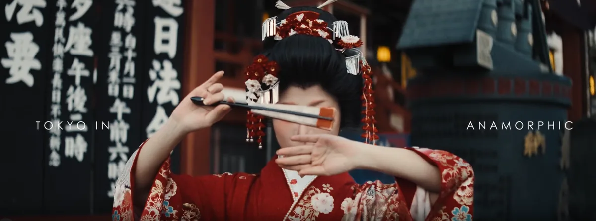
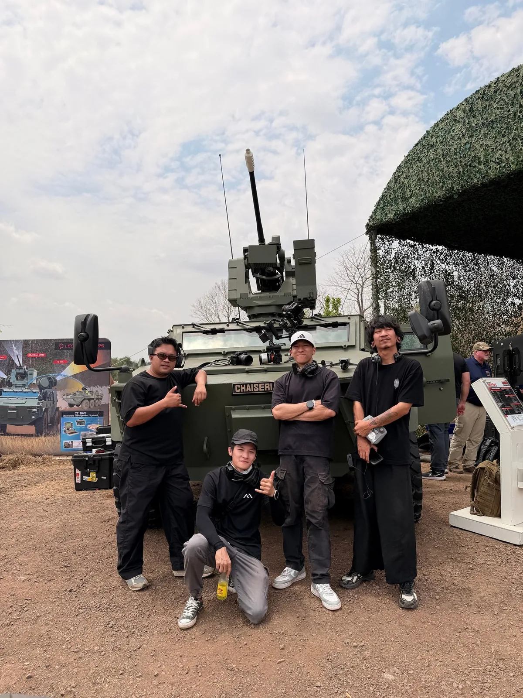
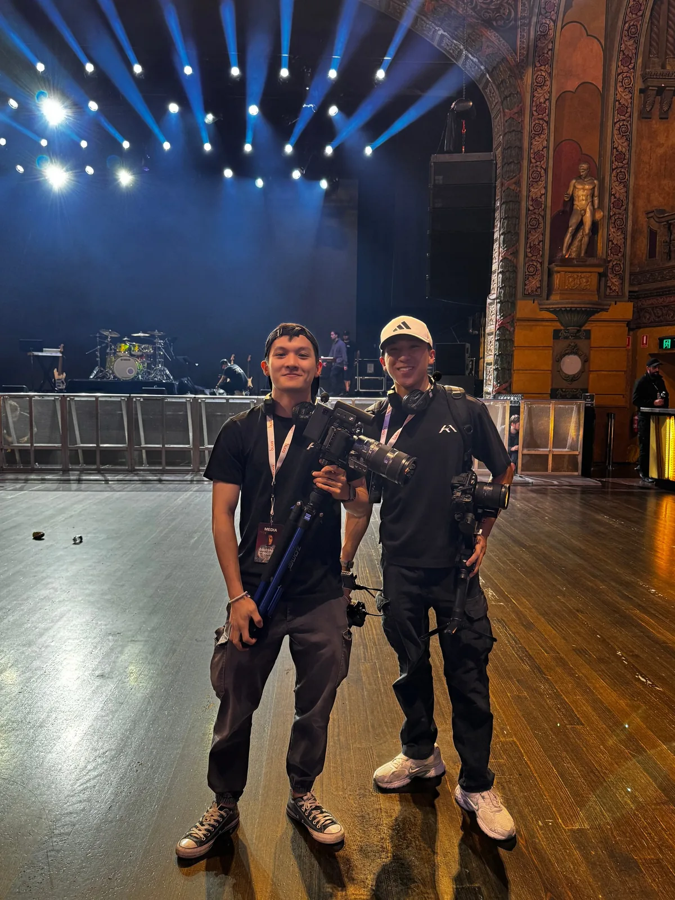

Blog
Guides, behind-the-scenes stories and ideas on festival, event and brand video production.
How to plan a festival aftermovie that people actually rewatch
An aftermovie is next year's ticket campaign. Here's how organisers can brief, schedule and set up a shoot so the film captures the night the way it felt.

How to plan a festival aftermovie that people actually rewatch
An aftermovie is next year's ticket campaign. Here's how organisers can brief, schedule and set up a shoot so the film captures the night the way it felt.

How much does event videography cost? What actually affects the price
There's no single price for event videography. Here are the factors that shape a quote, so you can compare offers fairly and brief your videographer properly.

Brand film vs commercial: which one does your business need?
They're both video, but they solve different problems. A quick guide to choosing between a brand film and a commercial, and briefing each one well.
What goes into a 60-second highlight reel delivered in 48 hours
The night ends, the crowd goes home, and the clock starts. Here's what happens between the last song and a 60-second highlight reel two days later.

Why anamorphic lenses make video look so cinematic
Wide frames, stretched flares and soft oval highlights. Here's what anamorphic lenses actually do, and when they're the right choice for your project.

8 questions to ask before hiring a videographer
Before you book anyone, ask these eight questions. They'll tell you whether a videographer is the right fit, and save you from surprises later.

Introducing the AKA Motions blog
Guides for event organisers and brands, behind-the-scenes stories from our shoots, and the craft behind the films. Here's what to expect.
No articles in this category yet. Check back soon.
Interested?
Work with us.
Whether you're launching a campaign, producing an event, or building a brand from the ground up, we'd love to hear your ideas.